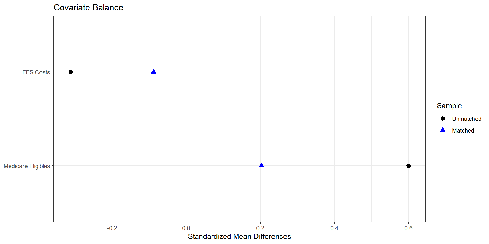
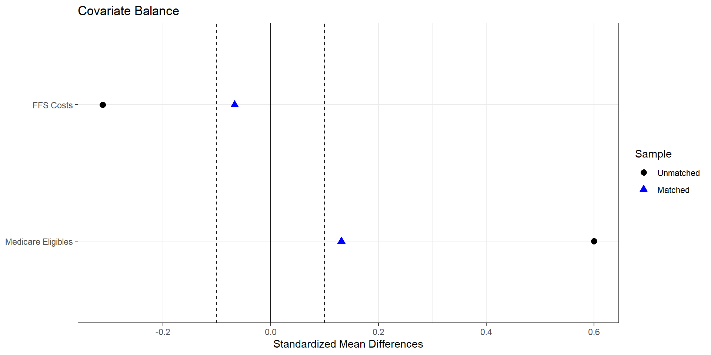
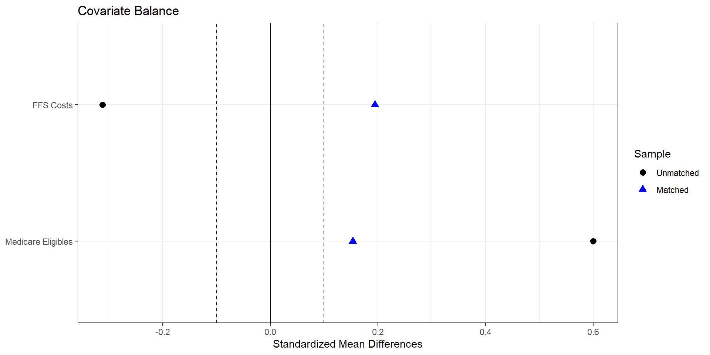

import pandas as pdimport numpy as np# Read the raw GA MA dataga_ma_2022_raw = pd.read_csv("../data/output/ma-snippets/ga-ma-data-2022.csv")def summarize_fips(group: pd.DataFrame) -> pd.Series:# Total MA enrollment in the county (same as first(avg_enrolled)) total_ma_enrollment = group["avg_enrolled"].iloc[0]# Shares in percent, like (avg_enrollment / total_ma_enrollment) * 100 ma_share = np.where( total_ma_enrollment >0, (group["avg_enrollment"] / total_ma_enrollment) *100.0, np.nan )# HHI = sum of squared shares hhi_ma = np.nansum(ma_share **2)# Plan count = distinct (contractid, planid) plan_count = group[["contractid", "planid"]].drop_duplicates().shape[0]# Average Part C premium avg_premium_partc = group["premium_partc"].mean(skipna=True)# Share of plans with positive premium share_pos_premiums = (group["premium_partc"] >0).mean()# Average bid avg_bid = group["bid"].mean(skipna=True)# First avg_eligibles and avg_ffscost (to mimic first()) avg_eligibles = group["avg_eligibles"].iloc[0] ffs_cost = group["avg_ffscost"].iloc[0]return pd.Series( {"hhi_ma": hhi_ma,"plan_count": plan_count,"avg_premium_partc": avg_premium_partc,"share_pos_premiums": share_pos_premiums,"avg_bid": avg_bid,"avg_eligibles": avg_eligibles,"ffs_cost": ffs_cost, } )ga_ma_2022 = ( ga_ma_2022_raw .groupby("fips", as_index=False) .apply(summarize_fips) .reset_index(drop=True))
import pandas as pdimport numpy as np# covariate columns corresponding to lp.covscov_cols = ["avg_eligibles","ffs_cost",]# restrict to complete cases on covariates and outcomelp_df_cc = lp_df.dropna(subset=cov_cols + ["avg_bid", "treated_dummy"])treated = ( lp_df_cc[lp_df_cc["treated_dummy"] ==1] .reset_index() .rename(columns={"index": "id_t"}))controls = ( lp_df_cc[lp_df_cc["treated_dummy"] ==0] .reset_index() .rename(columns={"index": "id_c"}))# Exact matching on all covariates in X (equivalent to exact = TRUE)pairs = treated.merge( controls, on=cov_cols, suffixes=("_t", "_c"))# M = 1: keep one control per treated unit (first match here; you could randomize)matched = pairs.drop_duplicates(subset=["id_t"])# Estimate ATE (or ATT, depending on your interpretation)effect_avg_bid = (matched["avg_bid_t"] - matched["avg_bid_c"]).mean()print("Exact-match estimate for avg_bid (treated - control):", effect_avg_bid)
import numpy as npimport pandas as pdfrom sklearn.preprocessing import StandardScalerfrom sklearn.neighbors import NearestNeighbors# lp_df should contain:# - 'avg_bid' (outcome, like Y)# - 'treated_dummy' (0/1, like Tr)# - all columns in lp.covs (covariates for matching)cov_cols = ["avg_eligibles","ffs_cost",]# Drop missinglp_df_cc = lp_df.dropna(subset=cov_cols + ["avg_bid", "treated_dummy"]).copy()treated = lp_df_cc[lp_df_cc["treated_dummy"] ==1].copy()controls = lp_df_cc[lp_df_cc["treated_dummy"] ==0].copy()X_t = treated[cov_cols].valuesX_c = controls[cov_cols].valuesy_t = treated["avg_bid"].valuesy_c = controls["avg_bid"].values# Standardize covariates (rough analogue to Weight=1 / inverse-variance scaling)scaler = StandardScaler()X_c_scaled = scaler.fit_transform(X_c)X_t_scaled = scaler.transform(X_t)# Nearest neighbors: M = 4 matches per treatedM =4nn = NearestNeighbors(n_neighbors=M, metric="euclidean")nn.fit(X_c_scaled)distances, indices = nn.kneighbors(X_t_scaled, return_distance=True)# For each treated unit, average its matched controls' outcomesmatched_ctrl_means = y_c[indices].mean(axis=1)# ATT-style estimate: E[Y(1) - Y(0) | treated]effect_nn = np.mean(y_t - matched_ctrl_means)print("Nearest-neighbor estimate for avg_bid (treated - control):", effect_nn)

Estimate... 11.133
AI SE...... 3.7953
T-stat..... 2.9333
p.val...... 0.003354
Original number of observations.............. 107
Original number of treated obs............... 54
Matched number of observations............... 107
Matched number of observations (unweighted). 428
import numpy as npimport pandas as pdfrom sklearn.preprocessing import StandardScalerfrom sklearn.neighbors import NearestNeighbors# lp_df should contain:# - 'avg_bid' (outcome, like Y)# - 'treated_dummy' (0/1, like Tr)# - all columns in lp.covs (covariates for matching)cov_cols = ["avg_eligibles","ffs_cost",]# Drop missinglp_df_cc = lp_df.dropna(subset=cov_cols + ["avg_bid", "treated_dummy"]).copy()treated = lp_df_cc[lp_df_cc["treated_dummy"] ==1].copy()controls = lp_df_cc[lp_df_cc["treated_dummy"] ==0].copy()X_t = treated[cov_cols].valuesX_c = controls[cov_cols].valuesy_t = treated["avg_bid"].valuesy_c = controls["avg_bid"].values# Standardize covariates (rough analogue to Weight=1 / inverse-variance scaling)scaler = StandardScaler()X_c_scaled = scaler.fit_transform(X_c)X_t_scaled = scaler.transform(X_t)# Nearest neighbors: M = 1 match per treatedM =1nn = NearestNeighbors(n_neighbors=M, metric="euclidean")nn.fit(X_c_scaled)distances, indices = nn.kneighbors(X_t_scaled, return_distance=True)# For each treated unit, average its matched controls' outcomesmatched_ctrl_means = y_c[indices].mean(axis=1)# ATT-style estimate: E[Y(1) - Y(0) | treated]effect_nn = np.mean(y_t - matched_ctrl_means)print("Nearest-neighbor estimate for avg_bid (treated - control):", effect_nn)

Estimate... 11.726
AI SE...... 4.3248
T-stat..... 2.7114
p.val...... 0.0067009
Original number of observations.............. 107
Original number of treated obs............... 54
Matched number of observations............... 107
Matched number of observations (unweighted). 107
import numpy as npimport pandas as pdfrom sklearn.neighbors import NearestNeighbors# Covariate set X (matching variables)cov_cols = ["avg_eligibles","ffs_cost",]# Drop missing on outcome / treatment / covariateslp_df_cc = lp_df.dropna(subset=cov_cols + ["avg_bid", "treated_dummy"]).copy()treated = lp_df_cc[lp_df_cc["treated_dummy"] ==1].copy()controls = lp_df_cc[lp_df_cc["treated_dummy"] ==0].copy()X_t = treated[cov_cols].to_numpy()X_c = controls[cov_cols].to_numpy()y_t = treated["avg_bid"].to_numpy()y_c = controls["avg_bid"].to_numpy()# Pooled covariance of covariates (R's Matching uses Mahalanobis on X)V = np.cov(np.vstack([X_t, X_c]).T)# 1-nearest neighbor with Mahalanobis distance --------------------------nn = NearestNeighbors( n_neighbors=1, metric="mahalanobis", metric_params={"V": V})nn.fit(X_c)distances, indices = nn.kneighbors(X_t, return_distance=True)# Matched control outcomesmatched_ctrl = y_c[indices.flatten()]# ATT-style effect (treated minus matched controls)effect_nn_md = np.mean(y_t - matched_ctrl)print("Mahalanobis 1-NN estimate for avg_bid (treated - control):", effect_nn_md)
Estimate... 11.416
AI SE...... 4.3543
T-stat..... 2.6217
p.val...... 0.0087482
Original number of observations.............. 107
Original number of treated obs............... 54
Matched number of observations............... 107
Matched number of observations (unweighted). 107
import numpy as npimport pandas as pdimport statsmodels.formula.api as smffrom sklearn.neighbors import NearestNeighbors# lp_df should contain:# - 'avg_bid' (outcome)# - 'treated_dummy' (0/1)# - 'avg_eligibles'# - 'ffs_cost' # use 'ffs_cost' here if that's your column name# 1. Estimate propensity scores ----------------------------------------logit_res = smf.logit("treated_dummy ~ avg_eligibles + ffs_cost", data=lp_df).fit()lp_df_ps = lp_df.copy()lp_df_ps["ps"] = logit_res.predict(lp_df_ps)# Optional: trim extreme PSeps =1e-6lp_df_ps["ps"] = lp_df_ps["ps"].clip(eps, 1- eps)# 2. Prepare treated / control samples ---------------------------------lp_df_cc = lp_df_ps.dropna(subset=["avg_bid", "treated_dummy", "ps"]).copy()treated = lp_df_cc[lp_df_cc["treated_dummy"] ==1].copy()controls = lp_df_cc[lp_df_cc["treated_dummy"] ==0].copy()y_t = treated["avg_bid"].to_numpy()y_c = controls["avg_bid"].to_numpy()X_t = treated[["ps"]].to_numpy() # 1D propensity score as matching covariateX_c = controls[["ps"]].to_numpy()# 3. 1-nearest neighbor on propensity score (ATT-style) ----------------nn = NearestNeighbors(n_neighbors=1, metric="euclidean")nn.fit(X_c)distances, indices = nn.kneighbors(X_t, return_distance=True)matched_ctrl = y_c[indices.flatten()]effect_ps_nn = np.mean(y_t - matched_ctrl)print("PS 1-NN estimate for avg_bid (treated - control):", effect_ps_nn)

Estimate... 13.097
AI SE...... 4.6112
T-stat..... 2.8402
p.val...... 0.0045081
Original number of observations.............. 107
Original number of treated obs............... 54
Matched number of observations............... 107
Matched number of observations (unweighted). 108
import numpy as npimport pandas as pdp_vars = lp_df.copy()# Inverse probability weightsp_vars["ipw"] = np.where( p_vars["treated_dummy"] ==1,1.0/ p_vars["ps"],1.0/ (1.0- p_vars["ps"]))# Treated group weighted mean of avg_bidtreated = p_vars[p_vars["treated_dummy"] ==1]mean_t1 = np.average(treated["avg_bid"], weights=treated["ipw"])# Control group weighted mean of avg_bidcontrols = p_vars[p_vars["treated_dummy"] ==0]mean_t0 = np.average(controls["avg_bid"], weights=controls["ipw"])ate_ipw = mean_t1 - mean_t0print("IPW mean (treated):", mean_t1)print("IPW mean (control):", mean_t0)print("IPW ATE (treated - control):", ate_ipw)
If we assume selection on observables holds, then we only need to condition on the relevant covariates to identify a causal effect. But we still need to ensure common support.